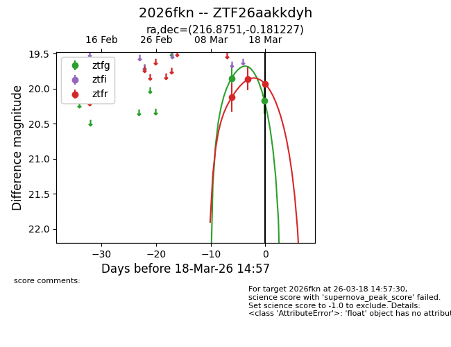
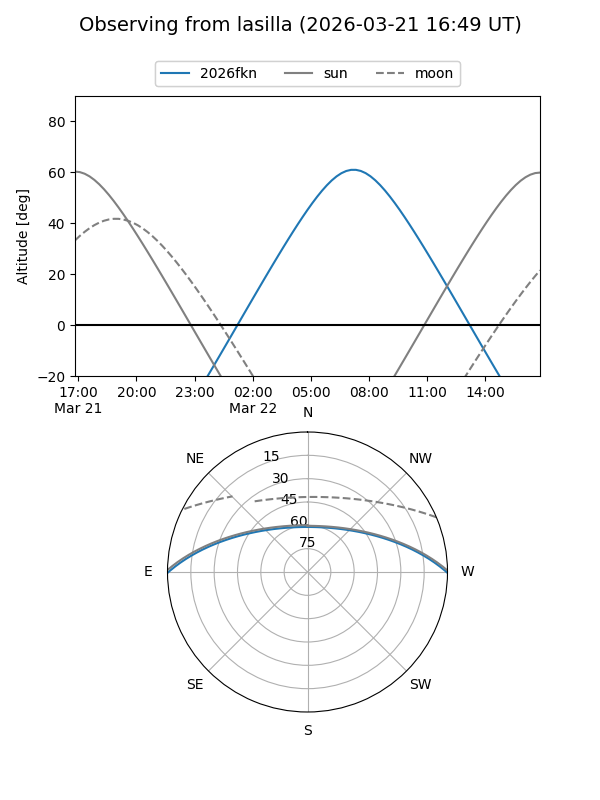
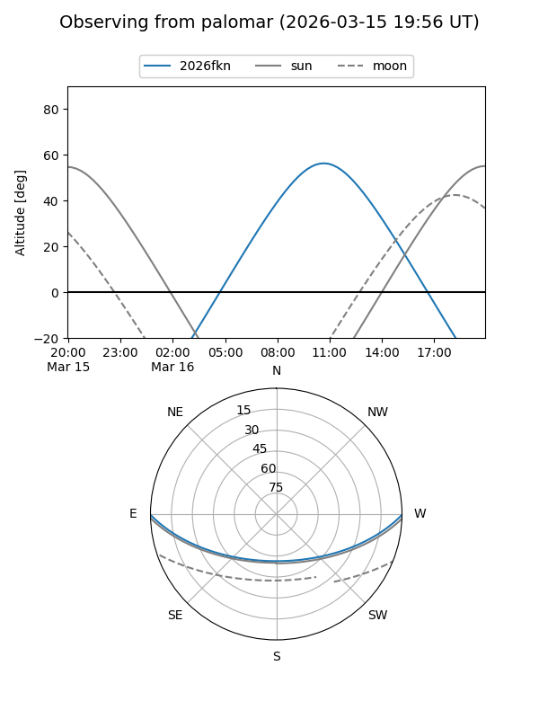
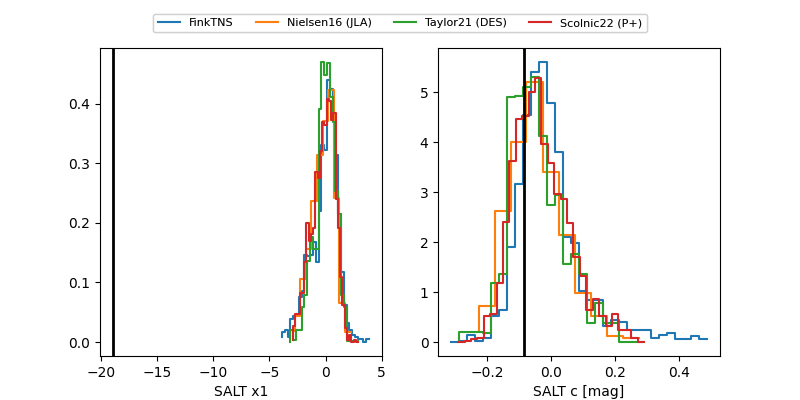

2026fkn
Target 2026fkn at 2026-03-18 14:59
Aliases and brokers:
FINK: link
Lasair: link
ALeRCE: link
TNS: link
YSE: link
alt names
ZTF26aakkdyh (ztf,fink_ztf)
2026fkn (tns,yse)
Coordinates:
equatorial (ra, dec) = 216.8751,-0.18123
equatorial (HMS+DMS) = 14:27:30.02,-00:10:52.42
galactic (l, b) = (347.0763,+54.24271)
Flags:
Photometry:
last ztfg=20.17, ztfr=19.93
2 ztfg, 3 ztfr detections
Lightcurve

Visibility


Additional plots
